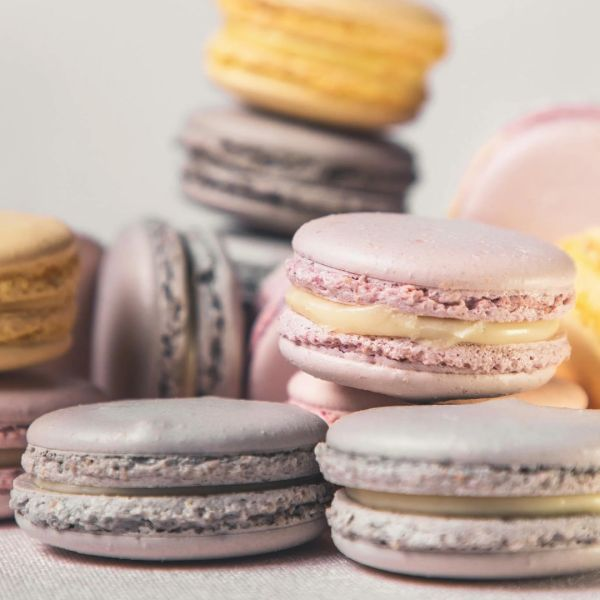
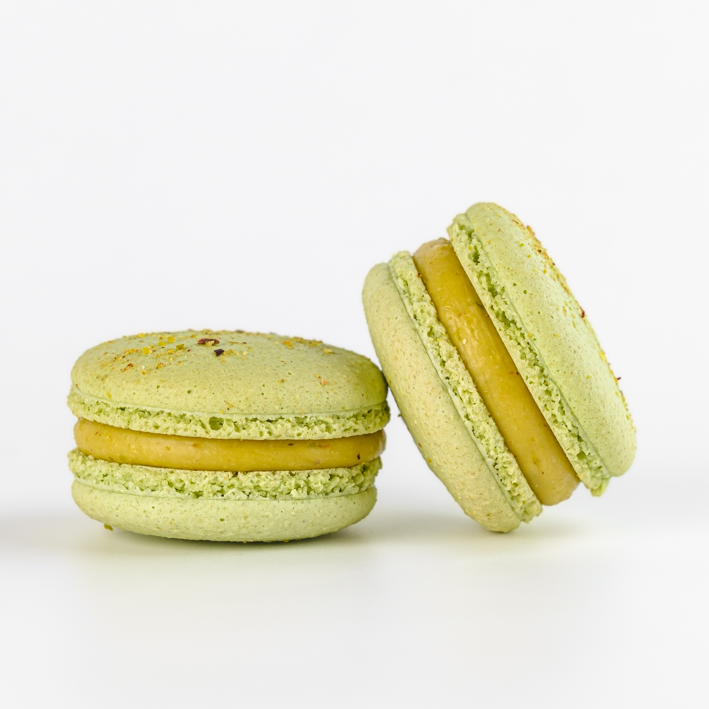
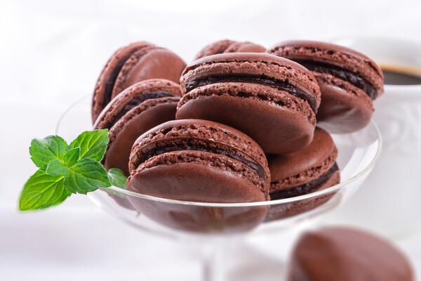
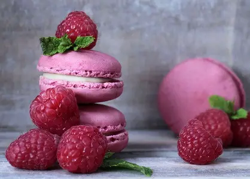
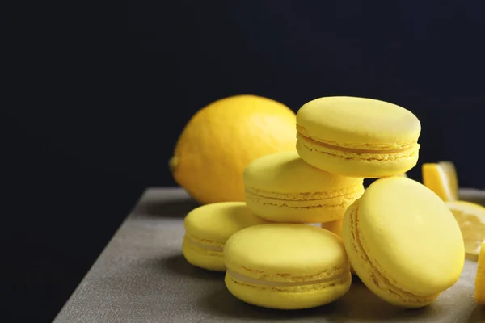
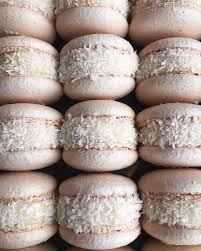
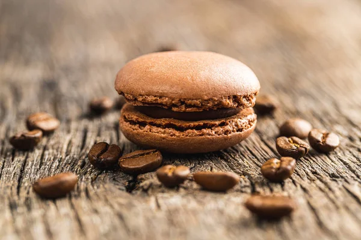
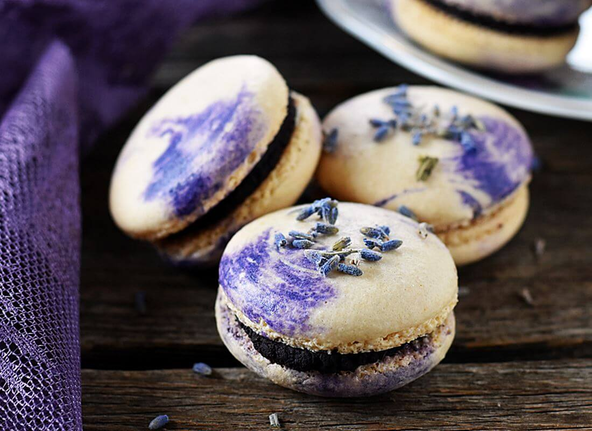
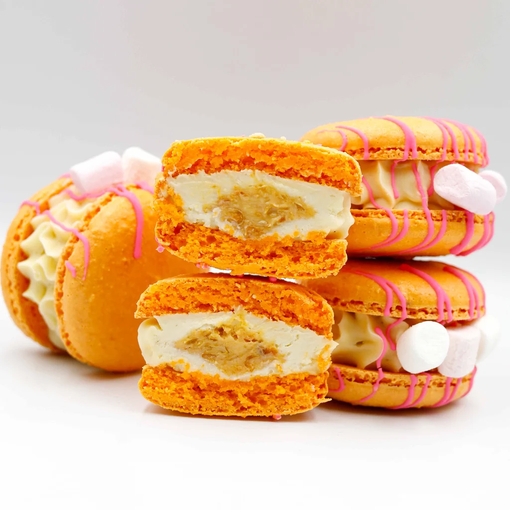
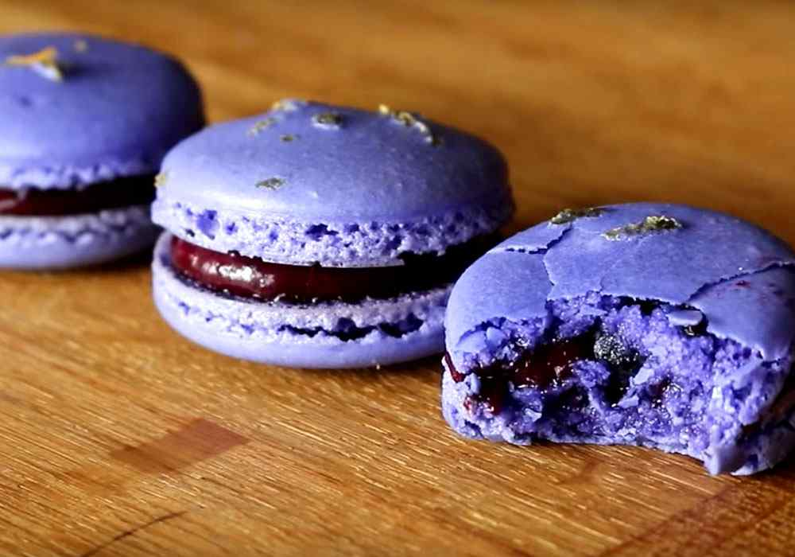

головна
про автора
рецепти
замовити

Класичні макаруни
Інгредієнти:
Мигдальне борошно, білки, пудра, цукор, барвник.
Рецепт:
Збий білки з цукром, змішай з сухими, відсадити кружечки, підсушити, випекти. Начинка — ганаш або крем.

Фісташкові макаруни
Інгредієнти:
Мигдальне борошно, фісташкова паста, білки, пудра, цукор.
Рецепт:
Все як у класичних, але з фісташковим кремом усередині. Важливо: точна температура і сушіння!

Шоколадні макаруни
Інгредієнти:
Мигдалеве борошно, какао, білки, цукор, шоколадний ганаш.
Рецепт:
Додайте какао до тіста, випікайте, наповніть ганашем із темного шоколаду.

Макаруни з малиною
Інгредієнти:
Мигдалеве борошно, білки, цукор, малина, вершки.
Рецепт:
Приготуйте оболонку, начиніть малиновим кремом або джемом.

Лимонні макаруни
Інгредієнти:
Білки, мигдаль, цукор, лимонна цедра, лимонний курд.
Рецепт:
Випікайте звичайне тісто, начиніть лимонним курдом.

Кокосові макаруни
Інгредієнти:
Кокосова стружка, мигдаль, білки, згущене молоко.
Рецепт:
Додайте кокос до тіста або крему, охолодіть перед подачею.

Кавові макаруни
Інгредієнти:
Мигдаль, білки, розчинна кава, вершки.
Рецепт:
Додайте каву до тіста або крему, дайте настоятись.

Фіалкові макаруни
Інгредієнти:
Мигдаль, білки, фіалковий сироп, крем-чиз.
Рецепт:
Додайте сироп у тісто та крем для легкого аромату квітів.

Апельсинові макаруни
Інгредієнти:
Мигдаль, білки, апельсинова цедра, крем на базі масла.
Рецепт:
Вмішайте цедру в крем, використовуйте яскраве забарвлення.

Макаруни з чорницею
Інгредієнти:
Мигдаль, чорничне пюре, білки, вершки.
Рецепт:
Крем готують із чорничного пюре та вершків, начиняють охолоджені оболонки.